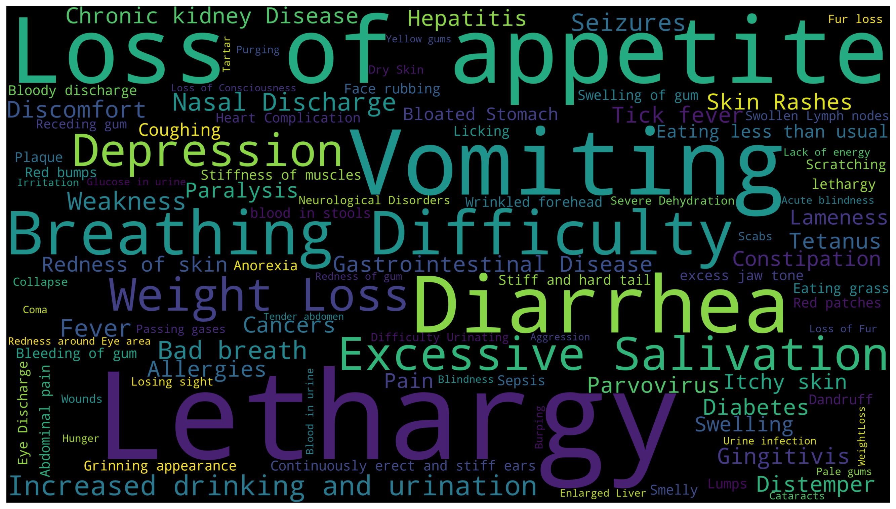
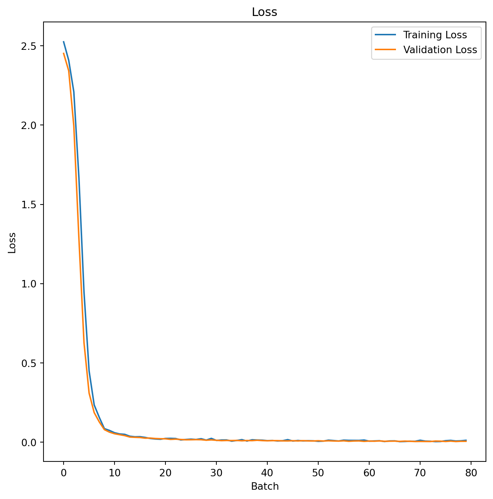

import pandas as pd
import numpy as np
import matplotlib.pyplot as plt
import seaborn as sns
from sklearn import metrics
from sklearn.metrics import f1_score, accuracy_score, recall_score, precision_score
from sklearn.metrics import confusion_matrix, classification_report
from sklearn.model_selection import train_test_split
Image source: https://www.freepik.com
Introduction
Classification as Cognitive Process
Classification, along with counting and sorting, is a fundamental cognitive process that plays a crucial role in human thinking and understanding. It involves categorizing and organizing information into distinct groups or classes based on shared characteristics, properties, or relationships.
Many children learn to classify objects even before they talk and walk. For example, one of the earliest games our kids played was distinguishing between different categories of colors and shapes.
Classification in Machine Learning
Like the importance of categorization in human thinking, classification is one of the core components of computer science and applications. It providing a systematic way to categorize and make predictions based on input data, thus, it is esstentially a cornerstone of many machine learning algorithms and applications, for example:
Automated Decision-Making:
Classification algorithms automate decision-making by learning patterns from labeled training data. Once trained, these algorithms can classify new, unseen data into predefined categories. This is valuable in applications where quick and accurate decisions are required, such as in fraud detection, customer support, and autonomous systems.
Personalization and Recommendation Systems:
Classification algorithms are widely used in recommendation systems to personalize content and make product recommendations. They classify users into groups based on their preferences and behavior, enabling platforms to suggest items that are likely to be of interest.
Natural Language Processing (NLP):
In NLP, classification is used for sentiment analysis, topic categorization, and spam detection. Classification models can analyze and categorize text data, providing valuable insights for applications in customer feedback analysis, content moderation, and more.
Healthcare and Diagnostics:
In healthcare, classification algorithms assist in diagnostics and treatment planning. They can classify medical images, patient records, and genetic data to support medical professionals in making informed decisions.
Fraud Detection and Security:
Classification algorithms are critical in fraud detection systems. They can classify transactions or user behavior patterns to identify anomalies and potential fraudulent activities in real-world.
Applications in Pet Disease Prediction
Given the fundamental position of classification algorithms in machine learning theory and applications, in this post, we will learn and demonstrate the basic principles and application process of classification algorithms with the prediction of pet diseases.
Throughout the entire span of human civilization, there is a long history of companionship with pets. There has been a constant quest to comprehend the well-being of our animals. Especially today, with the high development of social and material civilization, there has been a constant quest to comprehend the well-being of our animals. Given that the animals cannot verbally communicate with us and demonstrate their health status, the demand for veterinary medicine has been raised to understand pets’ health conditions based on their behaviors and symptoms.
For those who have a dog may notice their dog has some discomfort, which requires a diagnosis from hospitals. Some of the common diseases in dogs are quite severe and need immediate action, so users could enter the symptoms of the dog into our proposed model, and the model will predict what kind of disease the dog has and provide proper recommendations to take further action.
In this case, machine learning/deep learning provides a promising approach to making people learn about the health conditions of their pets with plenty of data collected through various sources1 2.
Methodology
Supervised Learning
Before we jump into classification, let’s take a look at a learning process in our real life.
Imagine you’re tackling a new mathematical concept. After working on a problem, you might check the solutions to verify your correctness. As you gain confidence in solving a specific problem type, you’ll eventually refrain from consulting the answers and independently tackle new questions that come your way.
Similar to human learning process, in Supervised Learning, the model acquires knowledge through examples too. Together with the input variable, we feed the model with the corresponding accurate labels. During the training phase, the model examines the association between our data and the respective labels, enabling it to discover patterns within the dataset.
Classification is a form of supervised machine learning in which the model endeavors to forecast the accurate label for a provided input dataset. The model undergoes training with the training data in the classification process, followed by an evaluation using test data, before it is applied to make predictions on novel, unseen data. A simple example could be the email classification. By training some sort of algorithms with lots of emails which labelled as spam or ham (no spam), the models can predict whether a incoming email is spam or ham.
Classification vs Regression
There two main types of supervised learning algorithms, namely classification and regression. Although, they share lots of common characteristics, they are very different from each other.
The prediction assignment becomes a classification task when the target variable is distinct. An example of this is discerning the inherent sentiment within a given text.
The predictive assignment becomes a regression task when the target variable is continuous. For instance, forecasting a person’s salary based on factors such as their educational background, prior work experience, geographical location, etc.
Binary vs Multiclass classification
There are two main types of classifications:
Binary classification involves categorizing data into two distinct classes or categories. An example can be predicting whether a credit card transaction is fraudulent or not, or determining if a patient has a particular medical condition.
Multiclass classification deals with sorting data into more than two classes or categories. An example can be recognizing handwritten digits (0-9), classifying different species of animals, or identifying the genre of a book.
While some algorithms can be adapted for both tasks, certain algorithms are specifically designed for one type of classification. For instance, logistic regression is commonly used for binary classification, while decision trees and neural networks can handle both binary and multiclass scenarios.
In this post, we’re going to use the neural networks to conduct a multiclass classification task, specifically, predict whether a pet has one of the given 12 diseases.
Neural Network for Multiclass Classification
When apply neural network to solve a problem, design the network architecture and choice the right loss function are the most important task. In this section, we’re going to introduce the loss function but leave the network architecture design for next section.
For multiclass classification in a neural network, a common choice for the loss function is the Categorical Cross Entropy Loss, the equation is as follows:
-\sum_{i=1}^N\sum_{c=1}^Cw_c\log\frac{exp(x_{n,c})}{\sum_{i=1}^Cexp(x_{n,i})}y_{n,c}
where x is the input, y is the target, w is the weight, C is the number of classes, and N denotes the number of training samples in the minibatch.
This equation reflects the negative log-likelihood of the correct class in a classification task, penalizing the model more when it is confidently wrong about a particular class. The softmax operation in the denominator ensures that the values in the exponential term form a valid probability distribution over all classes. The logarithm in the loss function penalizes deviations from the true class probabilities.
Evaluation Metrics
For classification problems, the precision, recall and F_1 are most common used indicators for model performance evaluation.
According to wikipedia, the definition of these metrics as following3 4:
Precision is the fraction of relevant instances among the retrieved instances. Written as a formula:
{\displaystyle {\text{Precision}}={\frac {\text{Relevant retrieved instances}}{\text{All retrieved instances}}}}
Recall is the fraction of relevant instances that were retrieved. Written as a formula:
{\displaystyle {\text{Recall}}={\frac {\text{Relevant retrieved instances}}{\text{All relevant instances}}}}
F_1 score is the harmonic mean of the precision and recall. Written as a formula:
{\displaystyle F_{1}={\frac {2}{\mathrm {recall} ^{-1}+\mathrm {precision} ^{-1}}}=2{\frac {\mathrm {precision} \cdot \mathrm {recall} }{\mathrm {precision} +\mathrm {recall} }}={\frac {2\mathrm {tp} }{2\mathrm {tp} +\mathrm {fp} +\mathrm {fn} }}}
where tp is the true positives, fp is the false positive, and fn is the false negative.
Datasets
Description
In this post, we will use a dog disease dataset5 containing 24000 entities with 17 symptoms and 12 diseases to conduct experiments. The dataset is in csv format, the symptoms and diseases are presented in text format, thus, we need to further convert the textual information into numerical representations. However, due to the length of this post, we’re not able to cover the feature engineering processing here, instead, we will focus on the data analysis and modeling process, which would be introduced in the next section.
Data Analysis
We first load all the python libraries we might use in the analysis:
Now, load the prepossessed (convert the textual data into numerical representation) csv file into pandas DataFrame:
df = pd.read_csv('data/pre_processed.csv')Let’s take a look at the first 5 rows:
df.head()| Unnamed: 0 | Fever | Nasal Discharge | Loss of appetite | Weight Loss | Lameness | Breathing Difficulty | Swollen Lymph nodes | Lethargy | Depression | ... | Hepatitis | Tetanus | Chronic kidney Disease | Diabetes | Gastrointestinal Disease | Allergies | Gingitivis | Cancers | Skin Rashes | Disease | |
|---|---|---|---|---|---|---|---|---|---|---|---|---|---|---|---|---|---|---|---|---|---|
| 0 | 0 | 1.0 | 1.0 | 0.0 | 0.0 | 1.0 | 0.0 | 0.0 | 1.0 | 0.0 | ... | 0.0 | 0.0 | 0.0 | 0.0 | 0.0 | 0.0 | 0.0 | 0.0 | 0.0 | Tick fever |
| 1 | 1 | 1.0 | 0.0 | 0.0 | 0.0 | 1.0 | 0.0 | 1.0 | 0.0 | 0.0 | ... | 0.0 | 0.0 | 0.0 | 0.0 | 0.0 | 0.0 | 0.0 | 0.0 | 0.0 | Tick fever |
| 2 | 2 | 1.0 | 1.0 | 0.0 | 0.0 | 0.0 | 0.0 | 1.0 | 1.0 | 0.0 | ... | 0.0 | 0.0 | 0.0 | 0.0 | 0.0 | 0.0 | 0.0 | 0.0 | 0.0 | Tick fever |
| 3 | 3 | 1.0 | 1.0 | 0.0 | 0.0 | 1.0 | 0.0 | 0.0 | 0.0 | 0.0 | ... | 0.0 | 0.0 | 0.0 | 0.0 | 0.0 | 0.0 | 0.0 | 0.0 | 0.0 | Tick fever |
| 4 | 4 | 0.0 | 1.0 | 0.0 | 1.0 | 0.0 | 1.0 | 0.0 | 0.0 | 0.0 | ... | 0.0 | 0.0 | 0.0 | 0.0 | 0.0 | 0.0 | 0.0 | 0.0 | 0.0 | Tick fever |
5 rows × 100 columns
As we can see in the table above, there are 98 features, and all the features are categorical which represents whether the dog has a certain symptom. The column Disease is the type of disease we want to predict.
Descriptive Statistics
We now take a look at the descriptive statistics of the dataset:
df.describe()| Unnamed: 0 | Fever | Nasal Discharge | Loss of appetite | Weight Loss | Lameness | Breathing Difficulty | Swollen Lymph nodes | Lethargy | Depression | ... | Parvovirus | Hepatitis | Tetanus | Chronic kidney Disease | Diabetes | Gastrointestinal Disease | Allergies | Gingitivis | Cancers | Skin Rashes | |
|---|---|---|---|---|---|---|---|---|---|---|---|---|---|---|---|---|---|---|---|---|---|
| count | 23999.000000 | 23999.000000 | 23999.000000 | 23999.000000 | 23999.000000 | 23999.000000 | 23999.000000 | 23999.000000 | 23999.000000 | 23999.000000 | ... | 23999.000000 | 23999.000000 | 23999.000000 | 23999.000000 | 23999.000000 | 23999.000000 | 23999.000000 | 23999.000000 | 23999.000000 | 23999.000000 |
| mean | 11999.000000 | 0.104129 | 0.106171 | 0.282178 | 0.142214 | 0.072378 | 0.146839 | 0.035918 | 0.286887 | 0.138631 | ... | 0.083337 | 0.083295 | 0.083337 | 0.083337 | 0.083337 | 0.083337 | 0.083337 | 0.083337 | 0.083337 | 0.083337 |
| std | 6928.058891 | 0.305435 | 0.308063 | 0.450069 | 0.349277 | 0.259118 | 0.353953 | 0.186090 | 0.452318 | 0.345568 | ... | 0.276396 | 0.276334 | 0.276396 | 0.276396 | 0.276396 | 0.276396 | 0.276396 | 0.276396 | 0.276396 | 0.276396 |
| min | 0.000000 | 0.000000 | 0.000000 | 0.000000 | 0.000000 | 0.000000 | 0.000000 | 0.000000 | 0.000000 | 0.000000 | ... | 0.000000 | 0.000000 | 0.000000 | 0.000000 | 0.000000 | 0.000000 | 0.000000 | 0.000000 | 0.000000 | 0.000000 |
| 25% | 5999.500000 | 0.000000 | 0.000000 | 0.000000 | 0.000000 | 0.000000 | 0.000000 | 0.000000 | 0.000000 | 0.000000 | ... | 0.000000 | 0.000000 | 0.000000 | 0.000000 | 0.000000 | 0.000000 | 0.000000 | 0.000000 | 0.000000 | 0.000000 |
| 50% | 11999.000000 | 0.000000 | 0.000000 | 0.000000 | 0.000000 | 0.000000 | 0.000000 | 0.000000 | 0.000000 | 0.000000 | ... | 0.000000 | 0.000000 | 0.000000 | 0.000000 | 0.000000 | 0.000000 | 0.000000 | 0.000000 | 0.000000 | 0.000000 |
| 75% | 17998.500000 | 0.000000 | 0.000000 | 1.000000 | 0.000000 | 0.000000 | 0.000000 | 0.000000 | 1.000000 | 0.000000 | ... | 0.000000 | 0.000000 | 0.000000 | 0.000000 | 0.000000 | 0.000000 | 0.000000 | 0.000000 | 0.000000 | 0.000000 |
| max | 23998.000000 | 1.000000 | 1.000000 | 1.000000 | 1.000000 | 1.000000 | 1.000000 | 1.000000 | 1.000000 | 1.000000 | ... | 1.000000 | 1.000000 | 1.000000 | 1.000000 | 1.000000 | 1.000000 | 1.000000 | 1.000000 | 1.000000 | 1.000000 |
8 rows × 99 columns
From the table above, we can infer that the features are very sparse with most of them are zeros, this requires the model have the ability to effectively extract information from high sparse data.
Visualization
We wanted to examine the dependent variable first, this could be done by count how many records for each disease. We plot the histogram as follows:
sns.histplot(df['Disease'])
plt.xticks(rotation=75)
plt.show()From the figure above, we can see that there are 12 diseases and there are equally distributed.
It would be interesting to show the distribution of the symptoms, we thus plots a word cloud of the symptom names as following:
count_series = df.drop(columns=["Unnamed: 0", "Disease"]).sum(axis = 0)
count_df = count_series.to_frame().reset_index().rename(columns = {"index":"symptom", 0:"frequency"})
freq_list = {}
for index in range(len(count_df)):
freq_list[count_df['symptom'].iloc[index]] = count_df['frequency'].iloc[index]from wordcloud import WordCloud
wc = WordCloud(width=3840, height=2160).generate_from_frequencies(freq_list)
plt.figure(figsize=(32, 10))
plt.imshow(wc, interpolation="bilinear")
plt.axis("off")
plt.show()
Data Preprocessing
We then, further convert the pandas dataframe to the format fits the model training requirements. It mainly includes: separate the features and labels into different numpy array; split the data into train, validation and test set.
X = df.drop(['Unnamed: 0', 'Disease','Tick fever','Distemper', 'Parvovirus',
'Hepatitis', 'Tetanus', 'Chronic kidney Disease', 'Diabetes',
'Gastrointestinal Disease', 'Allergies', 'Gingitivis', 'Cancers',
'Skin Rashes'], axis=1)
y = df[['Tick fever', 'Distemper', 'Parvovirus',
'Hepatitis', 'Tetanus', 'Chronic kidney Disease', 'Diabetes',
'Gastrointestinal Disease', 'Allergies', 'Gingitivis', 'Cancers',
'Skin Rashes']]X_train_val, X_test, y_train_val, y_test = train_test_split(X, y, test_size=0.2, random_state=66)
X_train, X_val, y_train, y_val = train_test_split(X_train_val, y_train_val, test_size=0.25, random_state=66)# Show how many data in each set
print("Length of train set:", len(X_train))
print("Length of validation set:", len(X_val))
print("Length of test set:", len(X_test))Length of train set: 14399
Length of validation set: 4800
Length of test set: 4800Experiments
We will use the pytorch framework to build and train a neural network, thus, we need to use the pytorch ecosystem to format the dataset, build the network architecture, load and feed dataset model, etc. We will introduce all these steps in this section.
import torch
import torch.nn as nn
import torch.nn.functional as F
from torch.utils.data import Dataset, DataLoaderNetwork Implementation
Wrap the dataset into pytorch Dataset format:
class DogSymptomsDataset(Dataset):
def __init__(self, X, Y):
self.X = torch.tensor(X.values, dtype=torch.float32)
self.Y = torch.tensor(Y.values, dtype=torch.float32)
def __len__(self):
return len(self.X)
def __getitem__(self, index):
return (self.X[index], self.Y[index])Initialize the DogSymptomsDataset and DataLoader for the train, validation and test data.
train_ds = DogSymptomsDataset(X_train, y_train)
val_ds = DogSymptomsDataset(X_val, y_val)
test_ds = DogSymptomsDataset(X_test, y_test)
trainloader = DataLoader(train_ds, batch_size=32, shuffle=True, num_workers=2)
valloader = DataLoader(val_ds, batch_size=32, shuffle=True, num_workers=2)
testloader = DataLoader(test_ds, batch_size=32, shuffle=True, num_workers=2)The network structure mainly consist of several feedforward and dropoutas layer, we use ReLU as the activation function and implement the forward function for passing the data through network. The pytorch framework will take care of error back-propagation.
class MLP(nn.Module):
def __init__(self):
super(MLP, self).__init__()
self.layers = nn.Sequential(
nn.Linear(86, 256),
nn.Dropout(0.2),
nn.ReLU(),
nn.Linear(256, 128),
nn.Dropout(0.2),
nn.ReLU(),
nn.Linear(128, 64),
nn.Dropout(0.2),
nn.ReLU(),
nn.Linear(64, 12),
# nn.Softmax()
)
def forward(self, x):
return self.layers(x)Training
The last missing puzzle now is implement the train and validation function which manages the whole training and validation process.
def f1(pred_list, label_list):
pred_all = torch.cat(pred_list)
label_all = torch.cat(label_list)
y_pred_classes = np.argmax(pred_all.detach().numpy(), axis=1)
y_true_classes = np.argmax(label_all.detach().numpy(), axis=1)
_f1 = f1_score(y_true_classes, y_pred_classes, average='weighted')*100
return _f1
def validation(model):
pred_list = []
label_list = []
loss_list = []
loss_function = nn.CrossEntropyLoss()
for i, data in enumerate(valloader):
# Get inputs
inputs, targets = data
# Perform forward pass
outputs = model(inputs)
loss = loss_function(outputs, targets)
loss_list.append(loss.item())
pred_list.append(outputs)
label_list.append(targets)
avg_loss = sum(loss_list)/len(valloader)
avg_f1 = f1(pred_list, label_list)
return (avg_loss, avg_f1)def train():
mlp = MLP()
torch.manual_seed(666)
trainloader = DataLoader(train_ds, batch_size=32, shuffle=True, num_workers=2)
loss_function = nn.CrossEntropyLoss()
optimizer = torch.optim.Adam(mlp.parameters(), lr=2e-4)
train_loss_list = []
val_loss_list = []
train_f1_list=[]
val_f1_list=[]
for epoch in range(10):
# Print epoch
print(f'Starting epoch {epoch+1}')
loss_epoch_list = []
pred_list = []
label_list = []
current_loss = 0.0
# Iterate over the DataLoader for training data
for i, data in enumerate(trainloader):
# Get inputs
inputs, targets = data
# Zero the gradients
optimizer.zero_grad()
# Perform forward pass
outputs = mlp(inputs)
pred_list.append(outputs)
label_list.append(targets)
# Compute loss
loss = loss_function(outputs, targets)
# Perform backward pass
loss.backward()
# Perform optimizationd
optimizer.step()
# Print statistics
loss_item = loss.item()
loss_epoch_list.append(loss_item)
current_loss += loss_item
if (i !=0) and (i % 50 == 0):
train_loss_list.append(current_loss/50)
train_f1 = f1([outputs], [targets])
train_f1_list.append(train_f1)
val_loss, val_f1 = validation(mlp)
val_loss_list.append(val_loss)
val_f1_list.append(val_f1)
print('Loss after mini-batch %5d: %.3f' %
(i, current_loss/50))
current_loss = 0.0
print('Training process has finished.')
return (mlp, train_loss_list,val_loss_list,train_f1_list,val_f1_list)We now start the training process:
model, train_loss_list,val_loss_list,train_f1_list,val_f1_list = train()Performance Evaluation
We are now have already completed the model training, it is time to use the model to make predict on our test set, then, calculate the precision, recall and F_1 score base on the predicted disease and the ground truth label.
def test(model):
pred_list = []
label_list = []
for i, data in enumerate(testloader):
# Get inputs
inputs, targets = data
# Perform forward pass
outputs = model(inputs)
pred_list.append(outputs)
label_list.append(targets)
pred_all = torch.cat(pred_list)
label_all = torch.cat(label_list)
y_pred_classes = np.argmax(pred_all.detach().numpy(), axis=1)
y_true_classes = np.argmax(label_all.detach().numpy(), axis=1)
avg_f1 = f1(pred_list, label_list)
return (avg_f1, y_pred_classes, y_true_classes)avg_f1, y_pred_classes, y_true_classes = test(model)
report = classification_report(y_true_classes, y_pred_classes,output_dict=True)
report_labeled={}
dnames = df['Disease'].unique().tolist()
for i in range(len(dnames)):
report_labeled[dnames[i]] = report[str(i)]
report_labeled['macro avg'] = report['macro avg']
report_labeled['weighted avg'] = report['weighted avg']
pd.DataFrame(report_labeled).T| precision | recall | f1-score | support | |
|---|---|---|---|---|
| Tick fever | 0.995062 | 0.987745 | 0.991390 | 408.0 |
| Distemper | 0.992481 | 0.997481 | 0.994975 | 397.0 |
| Parvovirus | 0.992736 | 0.997567 | 0.995146 | 411.0 |
| Hepatitis | 0.997455 | 0.997455 | 0.997455 | 393.0 |
| Tetanus | 1.000000 | 1.000000 | 1.000000 | 398.0 |
| Chronic kidney Disease | 0.997468 | 0.997468 | 0.997468 | 395.0 |
| Diabetes | 0.994898 | 1.000000 | 0.997442 | 390.0 |
| Gastrointestinal Disease | 1.000000 | 0.997519 | 0.998758 | 403.0 |
| Allergies | 1.000000 | 0.995074 | 0.997531 | 406.0 |
| Gingitivis | 1.000000 | 1.000000 | 1.000000 | 385.0 |
| Cancers | 0.995122 | 0.995122 | 0.995122 | 410.0 |
| Skin Rashes | 1.000000 | 1.000000 | 1.000000 | 404.0 |
| macro avg | 0.997102 | 0.997119 | 0.997107 | 4800.0 |
| weighted avg | 0.997089 | 0.997083 | 0.997083 | 4800.0 |
As we can see from the table above, our neural network predicts the 12 disease at very high precision, recall and F_1 scores.
We can also plot the confusion matrix to have better understanding of the prediction performance:
conf_matrix = metrics.confusion_matrix(y_true_classes, y_pred_classes)
df_cm = pd.DataFrame(conf_matrix, index=df['Disease'].unique(), columns=df['Disease'].unique())
print('F1-score% =', f1_score(y_true_classes, y_pred_classes, average='weighted')*100, '|',
'Accuracy% =', accuracy_score(y_true_classes, y_pred_classes)*100, '|',
'Recall% =', recall_score(y_true_classes, y_pred_classes, average='weighted')*100, '|',
'Precision% =', precision_score(y_true_classes, y_pred_classes, average='weighted')*100
)
plt.figure(figsize = (8,6))
sns.heatmap(df_cm)
plt.show()F1-score% = 99.70825899284065 | Accuracy% = 99.70833333333333 | Recall% = 99.70833333333333 | Precision% = 99.70885322303832fig, ax = plt.subplots(figsize=(8, 8))
ax.matshow(conf_matrix, cmap=plt.cm.Blues, alpha=0.3)
for i in range(conf_matrix.shape[0]):
for j in range(conf_matrix.shape[1]):
ax.text(x=j, y=i,s=conf_matrix[i, j], va='center', ha='center', size='xx-large')
plt.xlabel('Predictions', fontsize=18)
plt.ylabel('Actuals', fontsize=18)
plt.title('Confusion Matrix of ANN Model', fontsize=18)
plt.show()Further, we can visualize the the loss of the train and validation split during the whole training process, which is shown as follows:
train_loss = train_loss_list
val_loss = val_loss_list
train_acc = train_f1_list
val_acc = val_f1_list
# Draw loss plot
plt.figure(figsize = (8,8))
plt.plot(train_loss, label='Training Loss')
plt.plot(val_loss, label='Validation Loss')
plt.xlabel('Batch')
plt.ylabel('Loss')
plt.legend()
plt.title('Loss')
plt.show()
The F_1 score of the train and test split during the whole training process is shown as follows:
# Draw accuracy plot
plt.figure(figsize = (8,8))
plt.plot(train_acc, label='Training Accuracy')
plt.plot(val_acc, label='Validation Accuracy')
plt.xlabel('Batch')
plt.ylabel('Accuracy')
plt.legend()
plt.title('Accuracy')
plt.show()Discussion and Conclusions
In this blog, we begin by introducing the basic concepts of classification and its importance in computer science and applications. Secondly, we introduce the background knowledge about classification such as supervised learning, the connection and difference between classification and regression, and the difference between binary and multiclass classification. After introducing the pet disease prediction use case, we provide a detailed description of the use of neural networks in multiclass classification, as well as the related evaluation indexes.
After a detailed analysis of the data, we modeled the data using neural networks, and carried out an evaluation of the trained model. The experiment result shows our model achieved F_1 score of over 99% in all 12 pet disease predictions.
While neural networks are powerful tools for many classification tasks, they are not without their shortcomings. Here are some common limitations and challenges associated with using neural networks for classification:
Data Requirements:
Neural networks often require large amounts of labeled data for training to generalize well. In situations where labeled data is scarce, the model’s performance may suffer.
Computational Complexity:
Training deep neural networks can be computationally intensive, especially with large datasets and complex architectures. This can be a limitation for applications with resource constraints.
Interpretability: Neural networks, particularly deep architectures, are often considered as “black-box” models, making it challenging to interpret and understand the decision-making process. Lack of interpretability can be a concern in fields where transparency and explainability are crucial.
Despite these challenges, ongoing research and advancements in deep learning aim to address these limitations and enhance the performance, robustness, and interpretability of neural networks. Let’s keep learning!
Footnotes
Hwang, S., Shin, H. K., Park, J. M., Kwon, B., & Kang, M. G. (2022). Classification of dog skin diseases using deep learning with images captured from multispectral imaging devices. Molecular & Cellular Toxicology, 18(3), 299-309.↩︎
Debes, C., Wowra, J., Manzoor, S. et al. Predicting health outcomes in dogs using insurance claims data. Sci Rep 13, 9122 (2023). https://doi.org/10.1038/s41598-023-36023-5↩︎